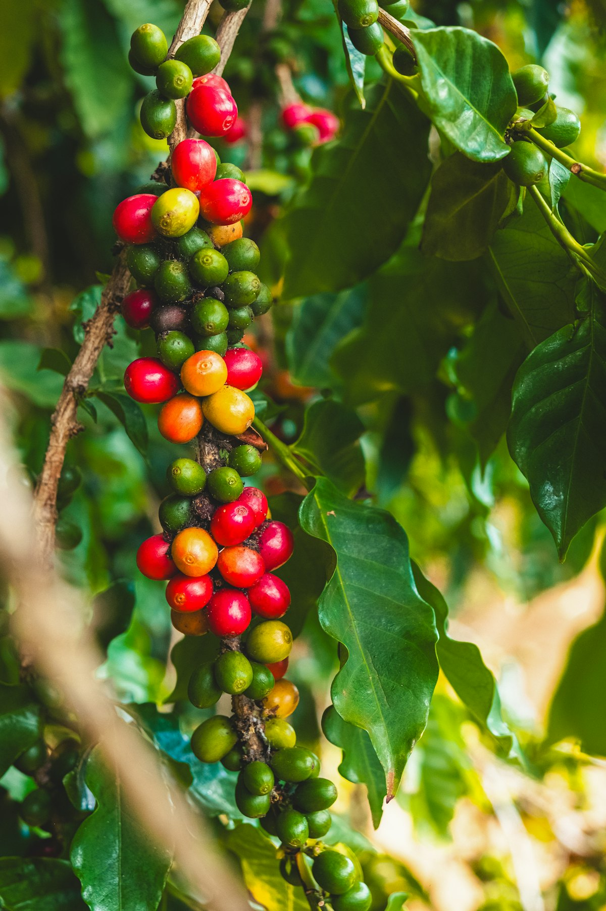
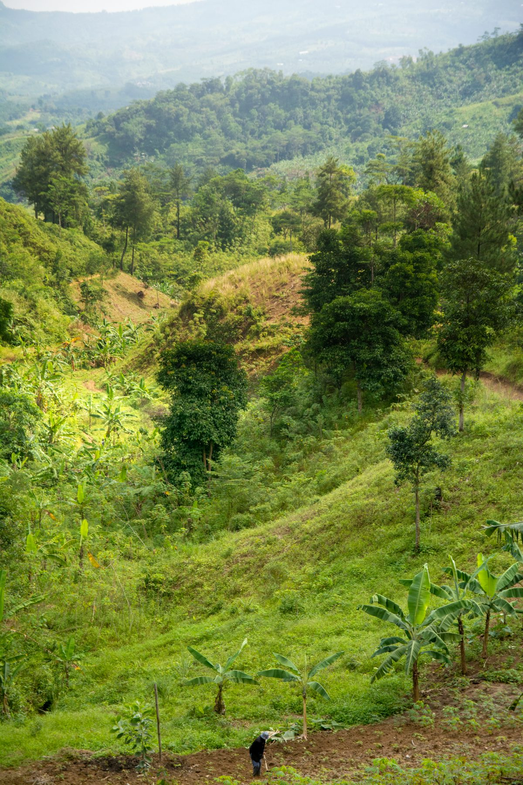
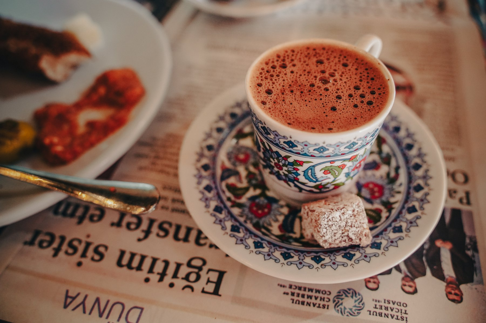
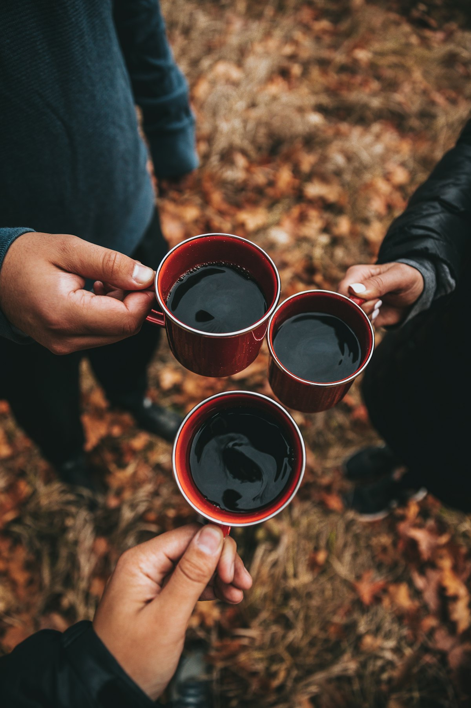
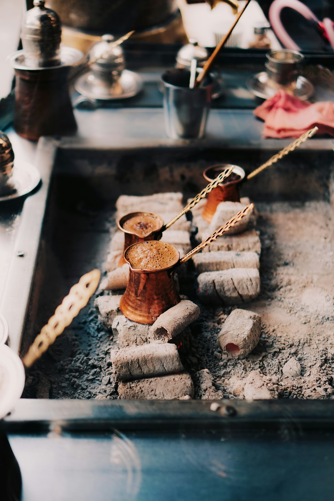

Cezve in hot sand
Single origin · Fresh roasted · Brewed on sand
Single-origin Puerto Rican beans, roasted fresh in small batches and prepared in the Turkish tradition: slow, fragrant, and brewed over hot sand. A 500-year-old ritual, returned to its freshest form.
Chapter 01 · Origin
A discovery in Adjuntas.
Three years ago, deep in the mountains of Puerto Rico, I walked the rows of Sandra Farms, a small estate in Adjuntas growing arabica at elevations most farms can only dream of. I bought a bag, took it home, and ground it fine the way my mom taught me.
What came out of the cezve that morning changed everything. The body, the foam, the chocolate-and-citrus finish. Puerto Rican coffee, it turns out, was made for Turkish brewing.
Turblend is what happened next: a Puerto Rican bean and a Turkish ritual, blended into one cup. A small, stubborn project that starts with pop-ups and is growing into a shop in Cincinnati.
Muhammed F. Çetinkaya Founder
Next: how it’s brewed
- Estate
- Sandra Farms
- Region
- Adjuntas, PR
- Elevation
- 3,200 ft

Adjuntas · Puerto Rico
The cezve doesn’t lie. Either the bean sings or it doesn’t.

Chapter 02 · Method
Old ritual, fresh hand.
Most Turkish coffee on shelves today was roasted months ago. Ours never sits. We roast in small batches, grind to order, and brew on hot sand the way it has been done in Türkiye for centuries. The result: foam that lasts, aroma that travels, and a cup that tastes the way it was meant to.
-
01 · Source
Grown high.
Arabica from Sandra Farms in Adjuntas, Puerto Rico. Volcanic soil, cool mountain nights, and a slow ripening that builds the chocolate and stone-fruit notes Turkish brewing pulls forward.
-
02 · Roast
Roasted fresh.
Small batches, never warehoused. Where the big Turkish brands sit on shelves for months, we roast weekly to a medium profile: dark enough for body, light enough to let the origin speak.
-
03 · Brew
Brewed on sand.
The traditional way: a copper cezve nestled into hot sand, heated slowly so the foam builds before the boil. Every cup poured in front of you.
Chapter 03 · The Bean
Why Puerto Rico, of all places.
Turkish coffee asks more of a bean than any other brewing method. It is ground to the finest powder, unfiltered, and served whole: body, oils, sediment and all.
A weak coffee falls apart in a cezve. A great one becomes something else entirely.
Puerto Rican arabica is high-grown, dense, and naturally sweet, and it handles the fine grind better than almost any origin we have tried. It is the unexpected match. And it is grown a short trip from Cincinnati, not halfway around the world.
Whole and in section
- Altitude
- 3,200 ft
- High elevation slows ripening and builds sugar density, the foundation of body and foam.
- Variety
- 100%
- Arabica only. No robusta, no fillers. Just the cleanest expression of the estate.
- Roast
- 7 days
- From roast to cup, never longer than a week. Most Turkish brands measure in months.
- Grind
- Flour
- Finer than espresso. The cezve demands it, and only the right bean survives it.
Chapter 04 · The Misfits
The bean the bag leaves behind.
Walk through Sandra Farms’ processing room and you’ll see two piles: whole beans headed for premium bags, and the cracked ones, split during sorting, perfectly delicious but visually imperfect. Most roasters won’t touch them. They go to waste.
We take them. Every one.
In Turkish coffee, the bean is ground to flour. Appearance disappears the moment the grinder runs. What survives is what mattered all along: origin, altitude, freshness, care. Same farm, same harvest, same hands. Just a different shape on the way to a great cup.
It is the most Turblend thing about us.
Next: where to taste it-
What the bag keeps
Whole. Photogenic.
-
What we take
Cracked. Same farm. Same cup.
Chapter 05 · Pop-ups
Pop-ups, then a shop.
We’re starting small: farmers’ markets across Cincinnati, coffee partnerships, and private events. A storefront comes next. Get on the list to be first in line.


-
Now
Farmers’ Markets
Across Cincinnati, locations rotating
Dates posted on Instagram
-
Fall 2026
Private Tastings
By invitation
Waitlist open
-
2027
The Turblend Shop
Cincinnati, OH
In planning
Upcoming dates
Next dates drop soon. Get on the list and you’ll hear first.
Get on the listChapter 06 · The List
Be first in line.
Pop-up dates, tasting invites, and shop news. A few emails a month, nothing more.
Chapter 07 · FAQ
Questions, answered.
What is Turkish coffee?
Finely ground coffee simmered unfiltered in a cezve and served with its grounds, which settle to the bottom of the cup.
Why brew on sand?
Hot sand heats the cezve slowly and evenly, building a thick foam before the coffee boils.
Can I buy beans?
Soon. Bags are coming first to list members.
Do you cater events?
Yes. Reach out for private tastings and partnerships.